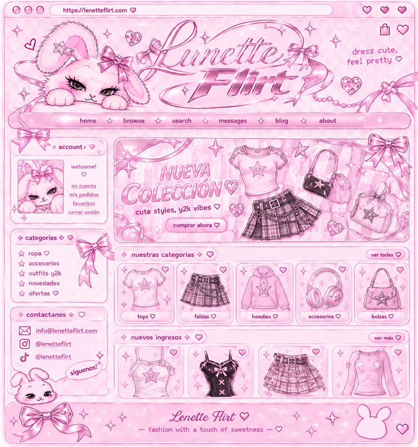

About Lunette
Rosa, brillos y nostalgia del internet de los 2000 — desde Guatemala con amor.
Nuestra historia
Lunette nace de una obsesión muy específica: la estética Y2K y Coquette. Lazos, corazones de cristal, brillos y esa energía de los primeros blogs de moda.
Seleccionamos tops, faldas, hoodies, accesorios y bolsos para que armes outfits únicos sin gastar una fortuna. Trabajamos con proveedores internacionales (modelo dropshipping) y curamos cada pieza pensando en el estilo de la marca.
Cada pedido se coordina de forma personal por WhatsApp o DM: te acompañamos desde la elección de talla hasta la entrega en Guatemala. ♡

Coquette
Detalles románticos y femeninos en cada pieza.
Y2K
Nostalgia, metalizados y cultura pop de los 2000.
Bunny
Nuestra mascota y el sello cute de la casa.
Guatemala
Envíos locales y atención cercana de verdad.